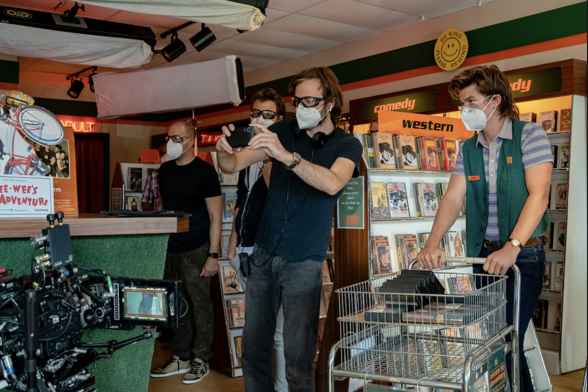
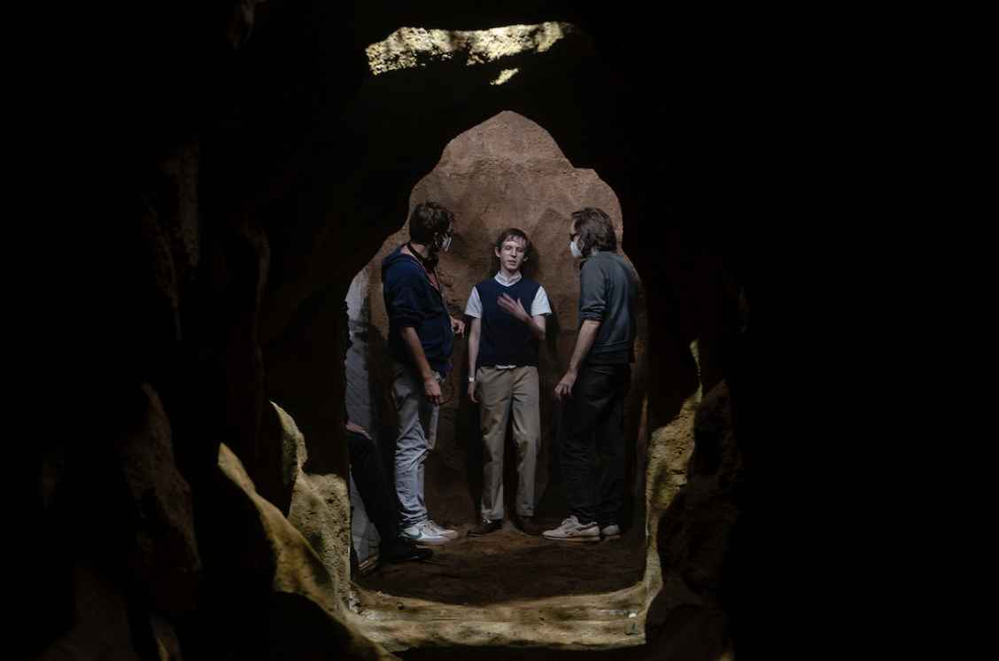

Dive deep into the eerie and captivating world of the Upside Down
with our exclusive
behind-the-scenes footage. Discover how the show's creators brought this parallel dimension to
life, from the chilling set designs to the groundbreaking special effects that make the Upside
Down feel so real. Take a look at our behind the scenes photos, showcasing the Duffer Brothers' creativity.
Take a Peek Behind the Scenes of Season 5
The first volume of the final season releases on November 26th.
Take a peek behind the curtain into the fifth and final
installment of the Netflix hit, Stranger Things. Experience
Hawkins like never before, one last time.
Watch the S5 Behind the Scenes here:
Exclusive On Set Photos: The Beauty Behind the Camera

